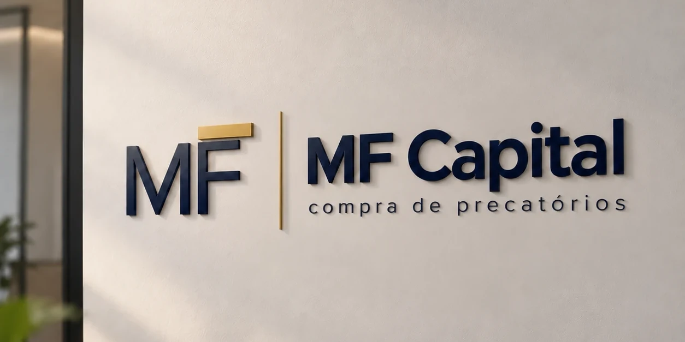

Você entra em contato
Conte sobre o precatório que você deseja vender. Começamos pelo seu objetivo.
Para vender seu precatório federal, cada etapa começa com informação, critério e uma conversa sobre o que faz sentido para você.

Atendemos somente precatórios federais, devidos pela União, pelo INSS ou por outros órgãos federais. Preencha os dados para preparar sua solicitação de avaliação. Seu aplicativo de e-mail abrirá com a mensagem pronta para revisão e envio.
A proposta, quando possível, depende da análise do caso e dos documentos pertinentes.
Uma negociação começa por informações bem examinadas
Informação para decidir.
Critério para avançar.
Quatro etapas para entender o crédito, avaliar as condições e avançar quando houver acordo.
Conte sobre o precatório que você deseja vender. Começamos pelo seu objetivo.
Os dados e documentos pertinentes ajudam a entender a situação do crédito e os próximos passos.
Uma eventual proposta é explicada com seus termos, para que você possa avaliar com tranquilidade.
Havendo acordo, a operação segue os procedimentos documentais e jurídicos aplicáveis.
Se você possui um precatório federal, a venda pode ser uma possibilidade a considerar. A avaliação leva em conta a situação do crédito e os documentos disponíveis.
O valor de cada decisão começa nos detalhes.
A leitura do crédito vem antes de qualquer proposta.
Uma negociação responsável depende de fatos e documentos. Cada crédito pede uma leitura própria.
O contexto do precatório ajuda a compreender o que está sendo negociado.
Informações sobre titularidade e crédito são essenciais para a análise.
Preço, etapas e procedimentos devem estar claros antes de qualquer decisão.
A clareza do processo ajuda você a saber exatamente o que está avaliando.
A origem, a titularidade e a situação do precatório compõem o ponto de partida.
Explicações objetivas sobre o que está sendo analisado e o que acontece depois.
Uma proposta só faz sentido quando seus pontos importantes estão claros.
Havendo acordo, a formalização observa as exigências aplicáveis à operação.
A conversa é ajustada à posição e ao objetivo de cada pessoa.
Para quem possui um precatório federal e quer entender as possibilidades de venda.
Para quem acompanha o titular do crédito e busca informações sobre a negociação.
Para quem recebeu um precatório federal por herança e quer entender as possibilidades de venda.
Sem preço ou prazo padronizado: a análise depende do crédito e do objetivo de cada operação.
Avaliação individual
Atendimento a combinar
O precatório, os documentos e as condições da negociação orientam a conversa. O próximo passo só acontece quando há entendimento entre as partes.
As respostas abaixo são um ponto de partida. Cada crédito precisa ser considerado em sua situação concreta.
É uma ordem de pagamento expedida pela Justiça para que a União, um estado, um município ou outro ente público pague uma dívida reconhecida em processo judicial definitivo. Veja a explicação do CNJ.
Não. A MF Capital compra somente precatórios federais, ou seja, os devidos pela União, pelo INSS e por outras autarquias e fundações federais. Precatórios estaduais e municipais não são atendidos.
Veja quem é o devedor no processo. Se for a União, o INSS ou outro órgão federal, como universidades e institutos federais, o precatório é federal e, em geral, o pagamento é feito pelo Tribunal Regional Federal (TRF). Se o devedor for um estado, um município ou um órgão deles, o precatório é estadual ou municipal.
Os dois servem para o poder público pagar condenações judiciais. A RPV (Requisição de Pequeno Valor) é usada para valores menores e é paga em prazo mais curto: na esfera federal, o limite é de 60 salários mínimos, e estados e municípios definem os próprios limites. Acima disso, o pagamento é feito por precatório, que entra na fila do orçamento público.
É o que tem origem em salários, vencimentos, aposentadorias, pensões, benefícios previdenciários ou indenizações por morte ou invalidez. Ele tem preferência de pagamento sobre os precatórios comuns, que são os demais, como os de desapropriações ou de questões tributárias.
Depende do ente devedor. Pela Constituição, os precatórios apresentados até 2 de abril devem entrar no orçamento do ano seguinte e ser pagos até o fim desse ano. Na prática, atrasos são mais comuns em estados e municípios, e mesmo no caso federal a espera desde a expedição do precatório pode passar de um ano.
Sim. A Constituição Federal (art. 100, § 13) permite que o credor transfira o precatório a terceiros, no todo ou em parte, sem precisar da concordância do ente devedor. As condições dependem da situação do crédito, e uma análise inicial indica os documentos e os próximos passos. A MF Capital avalia somente precatórios federais.
A venda permite antecipar o recebimento em vez de aguardar a fila de pagamento. Em troca, o valor recebido é menor que o valor do precatório. Vale comparar com calma o valor oferecido, o tempo de espera estimado e os seus planos para o dinheiro.
É a diferença entre o valor atualizado do precatório e o valor pago na compra. Ele varia conforme o ente devedor, a natureza do crédito, a ordem na fila de pagamento, a previsão de pagamento e a documentação.
Sim. A Constituição permite a cessão total ou parcial do crédito. Se a venda de uma parte faz sentido no seu caso, isso é avaliado na análise.
Em muitos casos, sim. Normalmente é preciso que os herdeiros estejam habilitados no processo ou que haja inventário ou partilha indicando a quem o crédito pertence. A análise dos documentos mostra o caminho para cada situação.
Pode mudar. Em precatórios alimentares, credores com 60 anos ou mais, com doença grave ou com deficiência têm prioridade para receber parte do valor antes dos demais. Essa prioridade é pessoal e não passa para quem compra o crédito, por isso ela é considerada na análise.
É recomendável que ele acompanhe a negociação. Se houver honorários separados para o advogado no próprio precatório, essa parte pertence a ele e não entra na venda.
Preencha a solicitação de avaliação ou escreva para mf.negociosecapital@gmail.com. Com os dados e documentos do crédito, fazemos a análise e, havendo interesse na operação, apresentamos as condições de uma proposta.
Em geral: documento de identidade, CPF, comprovante de residência, número do processo e informações sobre o precatório. Conforme o caso, podem ser necessários certidões, documentos do cônjuge, do inventário ou a procuração do advogado.
Por uma cessão de crédito, geralmente feita por escritura pública em cartório. Depois, a cessão é comunicada ao tribunal e ao ente devedor, como exige a Constituição, para que o pagamento seja feito a quem comprou o crédito.
Não. A proposta serve para você avaliar com calma. Nada é assinado sem a sua concordância, e você pode recusar ou pedir esclarecimentos sobre qualquer ponto.
Não há valor ou prazo único. A resposta depende das características do crédito, do ente devedor, do tribunal e dos termos de uma possível negociação.